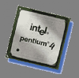
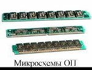
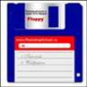
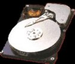
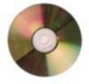
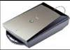
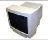
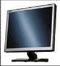
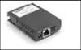

ЛЕКЦИЯ №7. (2 часа)
ТЕМА: «ОСНОВНЫЕ УСТРОЙСТВА КОМПЬЮТЕРА»
Рассматриваемые вопросы:
1. Микропроцессор
2. Память компьютера (внутренняя и внешняя)
3. Устройства ввода информации
4. Устройства вывода информации
5. Устройства передачи и приема информации
Литература: http://informatika.sch880.ru/p5aa1.html
Ход лекции:
Наrdwаrе – аппаратные средства т.е. механические, электрические и электронные узлы и компоненты компьютера.
1. Микропроцессор
 Процессор (Микропроцессор, chip-кристалл) – это основной рабочий компонент компьютера, который:
Реализуется процессор в виде сверх большой интегральной схемы (СБИС) на которой размешаются десятки миллионов функциональных элементов.
В общем случае центральный процессор содержит:
1) Арифметико-логическое устройство - часть процессора, выполняющая машинные команды
2) Устройство управления – часть процессора, выполняющая функции управления устройствами компьютера
3) Шины данных и шины адресов (на физическом уровне) – много проводные линии с гнездами для подключения электронных схем. Совокупность проводов магистрали разделяется на отдельные группы: шину адреса, шины данных и шину управления: Шина адреса предназначена для передачи адреса того устройства (или той ячейки памяти), к которому обращается процессор. По шине данных передаётся вся информация при записи и считывании. По шине управления передается управляющий сигнал. Процесс взаимодействия процессора и памяти сводится к двум операциям – записи и считывания информации. При записи процессор по специальным проводникам (шина адреса) передает биты, кодирующие адрес, по другим проводникам – управляющий сигнал «запись», и еще по другой группе проводников (шины данных) передает записываемую информацию. При чтении по шине адреса передается соответствующий адрес оперативной памяти (ОП), а с шины данных считывается нужная информация.
4) Регистры - ячейки памяти, которые служат для кратковременного хранения и преобразования данных и команд. На физическом уровне регистр – совокупность триггеров, способных хранить один двоичный разряд и связанных между собой общей системой управления
5) Счетчик команд – регистр управляющего устройства компьютера содержимое, которого соответствует адресу очередной выполняемой команды. Счетчик команд служит для автоматической выборки программы из последовательных ячеек памяти
6) Кэш память - очень быстрая память малого объема служит для увеличения производительности компьютера, согласования работы устройств различной скорости. Кэш-память может быть встроена сразу в процессор или размещаться на материнской плате
7) Сопроцессор – вспомогательный процессор, предназначенный для выполнения математических и логических действий. Использование сопроцессора позволяет ускорить процесс обработки информации компьютером
2. Память компьютера (внутренняя и внешняя)
Память компьютера (Memory) - устройство для запоминания данных. В зависимости от характера использования различают внутреннюю или внешнюю память.
Внутренняя память
 Оперативная память (ОП) предназначена для временного хранения выполняемых программ и данных, обрабатываемых этими программами. Это энергозависимая память. Физически реализуется в модулях ОЗУ (оперативных запоминающих устройствах) различного типа. При выключении электропитания вся информация в оперативной памяти исчезает.
Объём хранящейся информации в ОЗУ составляет от 32 до 512 Мбайт и более. Занесение информации в память и её извлечение, производится по адресам. Каждый байт ОП имеет свой индивидуальный адрес (порядковый номер). Адрес – число, которое идентифицирует ячейки памяти (регистры). ОП состоит из большого количества ячеек, в каждой из которых хранится определенный объем информации. ОП непосредственно связана с процессором. Возможности ПК во многом зависят от объёма ОП.
Кеш память - очень быстрая память малого объема служит для увеличения производительности компьютера, согласования работы устройств различной скорости.
Специальная - постоянная, Fiash, видеопамять и тд.
Постоянное запоминающее устройство (ПЗУ) – энергонезависимая память для хранения программ управления работой и тестирования устройств ПК. Важнейшая микросхема ПЗУ – модуль BIOS (BasicInput/OutputSystem – базовая система ввода/вывода), в котором хранятся программы автоматического тестирования устройств после включения компьютера и загрузки ОС в оперативную память. Это Неразрушимая память, которая не изменяется при выключении питания
Перепрограммируемая постоянная память (FlashMemory) – энергонезависимая память, допускающая многократную перезапись своего содержимого
CMOS RAM (ComplementaryMetal-OxideSemiconductor) - память с невысоким быстродействием и минимальным энергопотреблением от батарейки. Используется для хранения информации о конфигурации и составе оборудования компьютера, о режимах его работы. Содержимое изменяется программой, находящейся в BIOS (BasicInputOutputSystem).
Видеопамять – запоминающее устройство, расположенное на плате управления дисплеем и предназначенное для хранения текстовой и графической информации, отображаемой на экране. Содержимое этой памяти сразу доступно двум устройствам – процессору и дисплею, что позволяет изменять изображение на экране одновременно с обновлением видеоданных в памяти
Внешняя память
Внешняя память - это память, предназначенная для длительного хранения программ и данных. Целостность содержимого ВЗУ не зависит от того, включен или выключен компьютер
Дисковод (накопитель) - устройство записи/считывания информации. Накопители имеют собственное имя – буква латинского алфавита, за которой следует двоеточие. Для подключения к компьютеру одного или несколько дисководов и управления их работой нужен Дисковый контроллер
Носитель информации (носитель записи) – материальный объект, способный хранить информацию. Информация записывается на носитель посредством изменения физических, химических и механических свойств запоминающей среды
По типу доступа к информации внешнюю память делят на два класса:
В состав внешней памяти входят:
1) накопители на жестких магнитных дисках (НЖМД);
2) накопители на гибких магнитных дисках (НГМД);
3) накопители на магнитооптических компакт дисках;
4) накопители на оптических дисках (CD-ROM);
5) накопители на магнитной ленте и др.
 НГМД - накопители на гибких магнитных дисках
- Предназначены для хранения небольших объемов информации
- Следует оберегать от сильных магнитных полей и нагревания
- Это носители произвольного (прямого) доступа к информации
- Используются для переноса данных с одного компьютера на другой
- Для работы с информации носитель должен быть отформатирован, т.е. должна быть произведена магнитная разметка диска на дорожки и секторы
- Скорость обмена информации зависит от скорости вращения дисковода. Для обращения к диску, вставленному в дисковод, присваивается имя А:
- Объём ГМД сравнительно небольшой (3,5 дюйма - 1,44 Мбайт)
- Рекомендуется делать копии содержимого ГМД
Диски называются гибкими потому, что их рабочая поверхность изготовлена из эластичного материала и помещена в твердый защитный конверт. Для доступа к магнитной поверхности диска в защитном конверте имеется закрытое шторкой окно. Поверхность диска покрыта специальным магнитным слоем (1- намагниченный участок, 0 – не намагниченный). Информация записывается с двух сторон диска на дорожки в виде концентрических окружностей. Дорожки разбиваются на секторы. Современные дискетки имеют программную разметку. На каждом секторе выделяется участок для его идентификации, а на остальное место записываются данные. Дисковод снабжен двумя двигателями. Один обеспечивает вращение внутри защитного конверта. Второй перемещает головку записи/чтения вдоль радиуса поверхности диска. В защитном конверте имеется специальное окно защиты записи. С помощью бегунка это окно открывают и дискета становится доступна только на чтение, а на запись доступа не будет. Это предохраняет информацию на диске от изменения и удаления.
 НЖМД - накопители на жестких магнитных дисках
- Предназначены для хранения той информации, которая наиболее часто используется в работе - программ операционной системы, компиляторов, сервисных программ, прикладных программ пользователя, текстовых документов, файлов базы данных
- Следует оберегать от ударов при установке и резких перемещений в пространстве
- Это носители с произвольным доступом к информации
- Для хранения информации разбивается на дорожки и секторы
- Скорость обмена информации значительно выше ГД
- Объём ЖД измеряется от Мбайт до сотен Гбайт
НЖМД встроены в дисковод и являются несъемными. Они представляют собой несколько алюминиевых дисков с магнитным покрытием, заключенных в единый корпус с электродвигателем, магнитными головками и устройством позиционирования. К магнитной поверхности диска подводится записывающая головка, которая перемещается по радиусу диска с внешней стороны к центру. Во время работы дисковода диск вращается. В каждом фиксированном положении головка взаимодействует с круговой дорожкой. На эти концентрические дорожки и производится запись двоичной информации. Благодаря хорошей защищенности от пыли, влаги и других внешних воздействий достигают высокой плотности записи, в отличии от дискет.
Для обращения к НЖМД используется имя, задаваемое прописной латинской буквой, начиная с С: , но с помощью специальной системной программы можно разбить свой физический ЖД на несколько логических дисков, каждому из которых дается соответствующее имя.
Накопители на жестких магнитных дисках часто называют винчестер - по первой модели ЖД, имевшего 30 дорожек по 30 секторов, что совпало с калибром .30-30 охотничьего ружья
 Оптические (лазерные) CD и DVD диски
- Предназначены для хранения любого вида информации
- Информацию на CD записывается с помощью лазерного луча
- Следует оберегать от царапин и загрязнения поверхности
- Это носители прямого (произвольного) доступа к информации
- Объем (ёмкость) CD составляет сотни Мбайт; DVD -более 1Гбайта
- Более долговечны и надежны, чем магнитные диски
CD – CompactDisk. Изготовляют из органических материалов с напылением на поверхность тонкого алюминиевого слоя. Лазерный диск имеет одну дорожку в виде спирали. Информация записывается отдельными секторами мощным лазерным лучом, выжигающим на поверхности диска углубления, и представляет собой чередование впадин и выпуклостей. При считывании информации выступы отражают свет слабого лазерного луча и воспринимаются как «1», впадины поглощают луч и, воспринимаются как «0». Это бесконтактный способ считывания информации. Срок хранения 50-100лет
DVD – DigitalVideoDisk. Имеет те же размеры, что и CD. Объем - Гбайт. Может быть односторонним или двухсторонним, а на каждой стороне может быть 1 или 2 рабочих слоя.
Накопители на магнитных лентах (НМЛ)
- Используют для резервного (относительно медленного) копирования и хранения больших объемов информации (архивы)
- Устройство для записи и считывания магнитных лент называется стример
- Это устройство последовательного доступа к информации
3.Устройства ввода информации
Устройства ввода - это устройства, которые переводят информацию с языка человека на машинный язык.
К устройствам ввода относятся:
Стандартная клавиатура содержит:
1) набор алфавитно-цифровых клавиш;
2) дополнительно управляющие и функциональные клавиши;
3) клавиши управления курсором;
4) малую цифровую клавиатуру
У мыши и трекбола вращение металлического шара, покрытого резиной, передается двум пластмассовым валам, положение которых рассчитывается инфракрасными оптопарами и затем преобразуется в электрический сигнал, управляющий движением указателя мыши на экране. Тачпад - манипулятор для портативных компьютеров, встроен в ПК, перемещение курсора осуществляется путем прикосновения к тачпаду пальцев. Джойстик – манипулятор для управления электронными играми.
4.Устройства вывода информации
Устройства вывода - это устройства, которые переводят информацию с машинного языка в формы, доступные для человеческого восприятия.
К устройствам вывода относятся:
Различают алфавитно-цифровые и графические мониторы, а также монохромные мониторы и мониторы цветного изображения - активно-матричные и пассивно-матричные ЖКМ.
 Разрешающая способность выражается количеством элементов изображения по горизонтали и вертикали. Элементами графического изображения считаются точки – пиксели (pictureelement). Элементами текстового режима также являются символы. Современные видеоадаптеры (SuperVGA) обеспечивают высокие разрешения и отображают 16536 цветов при max разрешении.
Существуют:
1) мониторы на базе электронно-лучевой трубки (CRT).
 2) жидкокристаллические мониторы (LCD) на базе жидких кристаллов. Жидкие кристаллы – особое состояние некоторых органических веществ, в котором они обладают текучестью и свойством образовывать пространственные структуры, подобные кристаллическим. Жидкие кристаллы могут изменять свою структуру и светооптические свойства под воздействием электрического напряжения.
5. Устройства передачи и приема информации
 Модем – устройство подключения компьютера для передачи и приема по телекоммуникационным линиям. Для передачи информации модем преобразует сигнал из цифровой формы в аналоговую, для приема сигнала – наоборот.
Сетевой адаптер (сетевая карта) – устройство для подключения компьютера к локальной сети. Сетевой адаптер контролирует доступ к среде передачи данных и обмен данными в сети, выполняет функцию сопряжения компьютера с каналами связи.
Магистраль – линия связи к которой подключена сеть. Для крупных сетей магистраль реализуют на волоконно-оптическом кабеле.